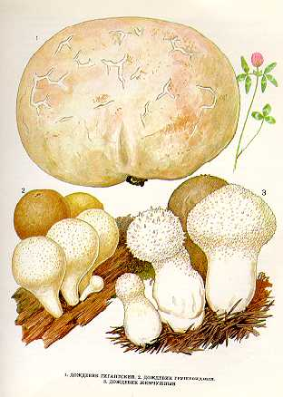

1. ДОЖДЕВИК ГИГАНТСКИЙ.
Селится на различных почвах, лиственных лесах,
на полях, лугах, выгонах. Встречается часто, но не обильно, единичными экземплярами
или группами до 10 грибов с августа по октябрь.
Плодовое тело до
Малоизвестный съедобный гриб. В пищу употребляются
молодые грибы (с белой мякотью) свежими, пригодны для сушки.
2.ДОЖДЕВИК ГРУШЕВИДНЫЙ.
Растет в хвойных, лиственных и смешанных лесах,
особенно на вырубках на земле, старых гнилых трухлявых пнях, у основания стволов,
иногда очень большими группами, со второй половины июня до октября.
Плодовое тело высотой 3—5 см, в поперечнике 2—3
см, яйцевидное, грушевидное, снизу суженное в ложную ножку, наружная оболочка тонкозернистая,
белая, серая или коричневая. Мякоть молодого гриба белая, в зрелом возрасте — коричнево-оливковая,
без особого вкуса и за-паха.
Споры шаровидные, гладкие, пурпурово-коричне вые.
Гриб съедобен, четвертой категории. Употребляется в молодом возрасте
свежим.
3. ДОЖДЕВИК ЖЕМЧУЖНЫЙ
Встречается в хвойных и лиственных лесах, на лугах, пастбищах, на гнилой древесине, на различных почвах с середины июня по сентябрь. Растет часто группами.
Плодовое тело 3-
Ложная ножка 2-
Споры образуются в верхней головчатой части. К старости мякоть в головке превращается в большое количество спор в виде светло-коричневой пыли.
Гриб съедобен, четвертой категории. Употребляется в пищу, пока не потемнела мякоть, в вареном и сушеном виде.